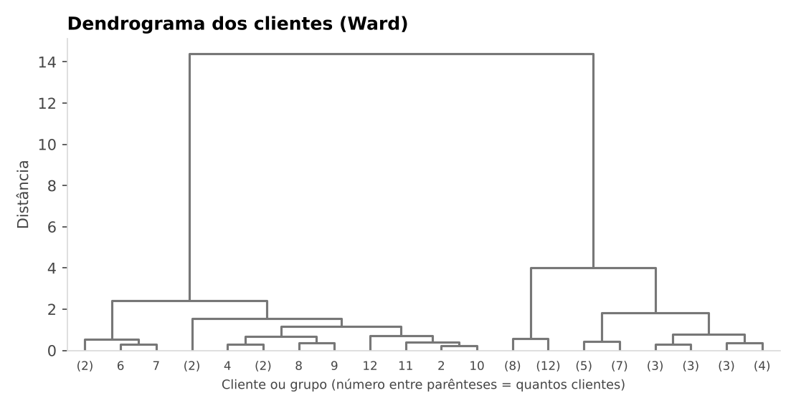
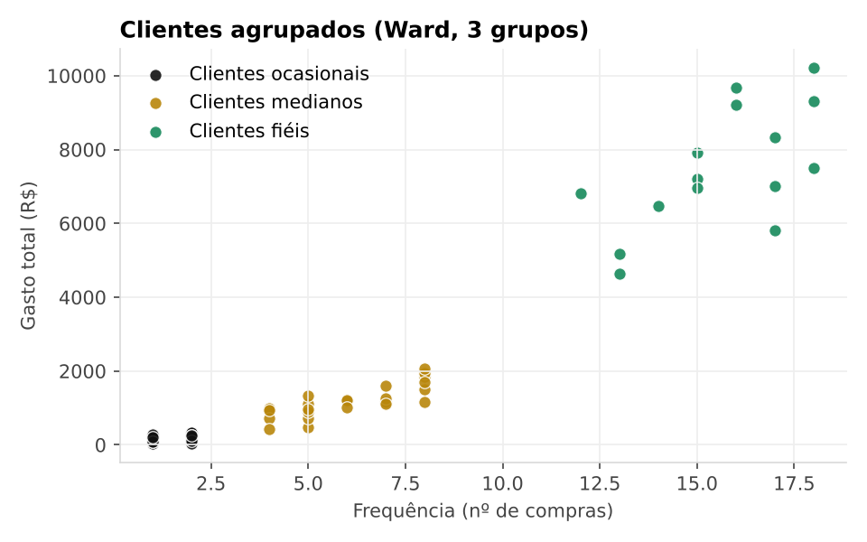
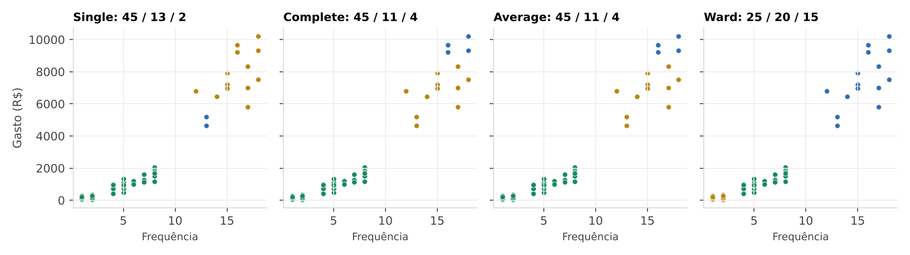

Hierarchical clustering: agrupamento hierárquico
Em vez de decidir antes quantos grupos queremos, vamos montar uma árvore com os clientes de uma loja e escolher depois onde cortá-la.
Objetivos
Ao final desta aula você será capaz de:
- explicar com suas palavras o que é o hierarchical clustering e o que é um dendrograma;
- diferenciar o método aglomerativo do divisivo;
- escolher o tipo de linkage e o ponto de corte da árvore;
- aplicar o método no Python, normalizando os dados antes, e comparar com o K-Means.
1. A ideia
Imagine um supermercado que quer organizar seus produtos. Alguns são comprados todo dia, outros só em certas épocas; uns são premium, outros básicos. Não sabemos quantas categorias naturais existem. Dá para agrupar itens parecidos sem definir antes quantos grupos teremos?
O hierarchical clustering (agrupamento hierárquico) faz isso. É um método de aprendizado não supervisionado que agrupa os dados por similaridade e organiza tudo numa árvore chamada dendrograma. Diferente do K-Means, ele não exige definir o número de clusters antes: olhamos a árvore e escolhemos onde “cortar”.
Como ler a figura: cada folha embaixo é um produto, e o eixo vertical é a distância. Produtos parecidos se juntam cedo, lá embaixo. Leite e iogurte se juntam bem perto do chão, então são muito parecidos. Laticínios e higiene pessoal só se encontram no topo, então são bem diferentes. A linha tracejada é um corte: tudo que ela atravessa vira um grupo.
Dois tipos
Aglomerativo (bottom-up): cada produto começa sozinho; os mais parecidos se juntam (leite + iogurte, sabonete + shampoo); grupos pequenos viram categorias maiores até formar a árvore completa. Divisivo (top-down): começa com tudo num setor só e vai dividindo: alimentos, higiene, utensílios… depois laticínios, carnes, limpeza…
E como ele se compara ao K-Means?
| Hierarchical clustering | K-Means | |
|---|---|---|
| Melhor para | Dados pequenos ou médios; estrutura fácil de interpretar; subgrupos naturais | Grandes volumes; rapidez; novos dados |
| Limitações | Alto custo computacional; difícil para dados que mudam muito | Precisa escolher K; não mostra hierarquia |
- Hierarchical clustering: agrupa por similaridade e monta uma árvore (dendrograma); não precisa definir K antes.
- Aglomerativo (bottom-up): cada ponto sozinho, depois junta os mais parecidos.
- Divisivo (top-down): tudo junto, depois vai dividindo.
- Cortar o dendrograma numa altura = escolher quantos grupos teremos.
2. Linkage, corte e inicialização
Agora uma rede de supermercados quer agrupar clientes por frequência de compra, valor médio gasto, tipo de produto e horários preferidos. Com os mesmos dados, como mudar a forma como os grupos são criados? Ajustando três hiperparâmetros: o linkage, o critério de parada e a inicialização.
Método de linkage
Define como medir a distância entre dois clusters na hora de decidir quem junta com quem. Entre dois pontos a conta é simples, mas entre dois grupos de vários pontos existem várias formas de medir.
| Linkage | Mede | Resultado típico |
|---|---|---|
| Single | Os dois pontos mais próximos | Grupos alongados e encadeados |
| Complete | Os dois pontos mais distantes | Grupos compactos e bem parecidos por dentro |
| Average | A média de todas as distâncias | Meio-termo entre single e complete |
| Ward | Quanto a variância aumenta ao juntar | Grupos equilibrados em tamanho (padrão do scikit-learn) |
Critério de parada (onde cortar)
Define quantos clusters finais teremos. Dá para parar de três jeitos: por um número fixo k, por uma distância de corte (threshold: não junta grupos mais distantes que esse valor) ou olhando a altura do dendrograma. Quando não sabemos quantos grupos existem, a distância de corte (a altura no dendrograma) é a mais útil.
Inicialização
É o ponto de partida. No aglomerativo, cada ponto começa como um cluster; no divisivo, todos começam juntos. O aglomerativo serve para descobrir padrões sozinho; o divisivo, para montar uma hierarquia a partir de categorias gerais.
No Python, o código fica assim:
# linkage e dendrograma (scipy)
from scipy.cluster.hierarchy import linkage, dendrogram
from sklearn.cluster import AgglomerativeClustering
Z = linkage(X, method="ward") # single, complete, average, ward
dendrogram(Z) # desenha a árvore
# grupos (scikit-learn)
modelo = AgglomerativeClustering(n_clusters=3, linkage="ward")
# ou: AgglomerativeClustering(n_clusters=None, distance_threshold=10)
rotulos = modelo.fit_predict(X)- Linkage = como medir a distância entre clusters: single (menor), complete (maior), average (média), ward (variância).
- Parada: k fixo, distância de corte (threshold) ou altura do dendrograma.
- Inicialização: aglomerativo (cada ponto sozinho) ou divisivo (todos juntos).
A “inicialização” aqui é, na prática, a escolha entre aglomerativo e divisivo. Ela não é um parâmetro do AgglomerativeClustering do scikit-learn, que só faz o aglomerativo. E o Ward só funciona com distância euclidiana.
3. Onde se usa
O hierarchical clustering aparece em muitas áreas:
O caminho é quase sempre o mesmo: limpar → resumir por cliente → normalizar → linkage e dendrograma → escolher o corte → interpretar. É o que vamos fazer com os dados de uma loja.
- Usos: marketing, saúde, finanças, textos, biologia (DNA), imagens.
- Passos: limpar → resumir por cliente → normalizar → linkage + dendrograma → escolher o corte → interpretar.
- Corte alto = poucos grupos grandes. Corte baixo = muitos grupos pequenos.
4. Os dados
Usamos o arquivo compras.csv, o mesmo da aula de K-Means. Assim dá para comparar os dois métodos nos mesmos clientes. Cada linha é um item comprado. São 821 linhas, 415 compras e 60 clientes. As primeiras linhas:
| InvoiceNo | InvoiceDate | Quantity | UnitPrice | CustomerID |
|---|---|---|---|---|
| 500001 | 2026-09-29 | 5 | 88.16 | 1001 |
| 500002 | 2026-07-16 | 2 | 97.28 | 1001 |
| 500002 | 2026-07-16 | 5 | 73.56 | 1001 |
| 500002 | 2026-07-16 | 4 | 87.14 | 1001 |
| 500003 | 2026-07-24 | 2 | 95.85 | 1001 |
| 500004 | 2026-07-29 | 3 | 52.44 | 1001 |
O que significa cada coluna:
| Coluna | O que é | Usamos hoje? |
|---|---|---|
| InvoiceNo | Número da compra. Uma compra pode ter vários itens, então o número se repete. | Sim: contamos quantas compras cada cliente fez |
| InvoiceDate | Dia em que a compra foi feita. | Hoje não |
| Quantity | Quantas unidades do item o cliente levou. | Sim: para calcular o total |
| UnitPrice | Preço de uma unidade, em reais. | Sim: para calcular o total |
| CustomerID | Código do cliente. É por ele que agrupamos tudo. | Sim |
Não existe uma coluna com o valor gasto, então vamos calcular: o total de cada linha é Quantity × UnitPrice. Depois, resumimos tudo em duas medidas por cliente: quantas compras fez e quanto gastou.
5. Dendrograma interativo
Esta é a árvore dos 60 clientes. Mexa no corte e veja como o número de grupos muda. Em baixo, cada cliente aparece no gráfico de frequência e gasto, com a cor do seu grupo. Passe o mouse (ou toque) em um ponto para ver quem é.
Experimente:
- Clique em 2 grupos, depois em 3 e em 6. Onde a linha tracejada fica em cada caso?
- Arraste o corte devagar de cima para baixo. O que acontece com o tamanho dos grupos?
- Com 3 grupos, troque o linkage entre Single, Complete e Ward. Qual deles deixa um grupo com só 2 clientes?
- No Ward, olhe os pulos verticais da árvore. Qual é o maior? O que ele quer dizer?
6. Passo a passo
O código abaixo é o mesmo do notebook. Você pode ir copiando célula por célula no Google Colab, ou abrir o notebook direto lá (botão no fim da página).
Importar as bibliotecas
pandas mexe com tabelas e matplotlib faz os gráficos. O linkage e o dendrogram, do scipy, calculam e desenham a árvore. O AgglomerativeClustering, do scikit-learn, forma os grupos. O StandardScaler normaliza os dados, e o KMeans só entra no final, para comparar.
# 1. Importar bibliotecas
import pandas as pd
import matplotlib.pyplot as plt
from scipy.cluster.hierarchy import linkage, dendrogram
from sklearn.cluster import AgglomerativeClustering, KMeans
from sklearn.preprocessing import StandardScaler
from google.colab import filesCarregar o arquivo
O files.upload() abre um botão para você escolher o compras.csv no seu computador. Depois o read_csv lê o arquivo em uma tabela chamada df.
# 2. Enviar o arquivo compras.csv
files.upload()
df = pd.read_csv("compras.csv", parse_dates=["InvoiceDate"])
df.head()Apague as linhas from google.colab import files e files.upload() e deixe o compras.csv na mesma pasta do notebook.
Resumo por cliente
O dropna tira as linhas sem código de cliente (neste arquivo não há nenhuma, mas em dados reais é comum). Depois criamos o Total de cada linha e usamos o groupby para juntar tudo por cliente: Frequencia é o número de compras diferentes e Gasto é a soma dos totais.
# 3. Montar o resumo por cliente (uma linha por cliente)
df = df.dropna(subset=["CustomerID"])
df["Total"] = df["Quantity"] * df["UnitPrice"]
cli = df.groupby("CustomerID").agg(
Frequencia=("InvoiceNo", "nunique"),
Gasto=("Total", "sum"))
cli.head()Resultado (5 primeiros clientes):
| CustomerID | Frequencia | Gasto |
|---|---|---|
| 1001 | 13 | 4633.76 |
| 1002 | 16 | 9668.80 |
| 1003 | 18 | 7500.21 |
| 1004 | 15 | 7211.79 |
| 1005 | 15 | 7920.94 |
Agora temos uma linha por cliente, que é o que o método precisa. O cliente 1001, por exemplo, fez 13 compras e gastou R$ 4.633,76.
Normalizar os dados
Repare nas escalas: o gasto passa de 10 mil reais e a frequência chega a 18. Como o método mede distâncias, o gasto ia dominar a conta. O StandardScaler coloca as duas colunas numa escala parecida.
# 4. Normalizar (todas as variáveis com o mesmo peso)
X = StandardScaler().fit_transform(cli)O gasto pode ir a milhares de reais e a frequência a poucas unidades. Sem normalizar, a distância fica dominada pelo gasto. A normalização garante que todas as variáveis tenham o mesmo peso.
Linkage e dendrograma
O linkage(X, method="ward") calcula todas as junções, da primeira (os dois clientes mais parecidos) até a última (tudo num grupo só), e guarda em Z. O dendrogram desenha a árvore. Com truncate_mode="lastp" e p=20, ele mostra só as últimas 20 junções, para a figura não ficar poluída. Os números entre parênteses são quantos clientes existem naquele galho.
# 5. Linkage e dendrograma
Z = linkage(X, method="ward") # single, complete, average ou ward
plt.figure(figsize=(10, 4))
dendrogram(Z, truncate_mode="lastp", p=20)
plt.xlabel("Cliente ou grupo (o número entre parênteses é a quantidade de clientes)")
plt.ylabel("Distância")
plt.title("Dendrograma dos clientes")
plt.show()
Escolher o corte
Agora traçamos uma linha horizontal com plt.axhline. Todo galho que a linha atravessa vira um grupo. Em 3,5 a linha cruza três galhos, então teremos 3 grupos.
# 6. Escolher o corte: uma linha horizontal no dendrograma
plt.figure(figsize=(10, 4))
dendrogram(Z, truncate_mode="lastp", p=20)
plt.axhline(y=3.5, color="red", linestyle="--") # altura do corte
plt.ylabel("Distância")
plt.title("Corte em 3,5 = 3 grupos")
plt.show()O maior pulo da árvore fica no topo, e isso sugere 2 grupos: os clientes fiéis e todo o resto. Usamos 3 porque separa quem compra com certa regularidade de quem quase não compra, e porque assim dá para comparar com o K-Means. Não existe corte “certo”: depende do que você vai fazer com os grupos.
Aplicar o modelo
Com o corte decidido, o AgglomerativeClustering forma os grupos. O fit_predict devolve o grupo de cada cliente (0, 1 ou 2), que guardamos na coluna Grupo.
# 7. Aplicar o agrupamento hierárquico com 3 grupos
modelo = AgglomerativeClustering(n_clusters=3, linkage="ward")
cli["Grupo"] = modelo.fit_predict(X)
cli["Grupo"].value_counts().sort_index()Resultado:
| Grupo | clientes |
|---|---|
| 0 | 15 |
| 1 | 25 |
| 2 | 20 |
Interpretar os grupos
O modelo só dá números. Quem dá sentido é a gente: calculamos quantos clientes tem em cada grupo, a frequência média e o gasto médio.
# 8. Interpretar: média de cada grupo
cli.groupby("Grupo").agg(
clientes=("Gasto", "count"),
frequencia_media=("Frequencia", "mean"),
gasto_medio=("Gasto", "mean")).round(1)Resultado:
| Grupo | clientes | frequencia_media | gasto_medio |
|---|---|---|---|
| 0 | 15 | 15.6 | 7483.5 |
| 1 | 25 | 6.0 | 1169.6 |
| 2 | 20 | 1.6 | 177.5 |
Ver no gráfico
Cada bolinha é um cliente, pintado com a cor do seu grupo.
# 9. Visualizar os grupos
plt.scatter(cli["Frequencia"], cli["Gasto"], c=cli["Grupo"], cmap="viridis")
plt.xlabel("Frequência (nº de compras)")
plt.ylabel("Gasto total (R$)")
plt.title("Clientes agrupados (Ward, 3 grupos)")
plt.show()
Comparar linkages
O que acontece se trocarmos o linkage? Este laço refaz o agrupamento com cada tipo e mostra o tamanho dos três grupos:
# 10. Comparar os tipos de linkage (3 grupos em cada)
for metodo in ["single", "complete", "average", "ward"]:
rotulos = AgglomerativeClustering(n_clusters=3, linkage=metodo).fit_predict(X)
tamanhos = pd.Series(rotulos).value_counts().sort_values(ascending=False).tolist()
print(f"{metodo:9s} -> clientes por grupo: {tamanhos}")Resultado:
| linkage | clientes por grupo |
|---|---|
| single | [45, 13, 2] |
| complete | [45, 11, 4] |
| average | [45, 11, 4] |
| ward | [25, 20, 15] |

| Linkage | Clientes por grupo | Leitura |
|---|---|---|
| Single | 45 · 13 · 2 | Um grupo enorme vai engolindo os vizinhos em cadeia e sobram só 2 clientes isolados. |
| Complete | 45 · 11 · 4 | O grupo grande continua, mas os clientes de gasto alto se dividem em dois grupos compactos. |
| Average | 45 · 11 · 4 | Parecido com o complete nestes dados. |
| Ward | 25 · 20 · 15 | Os três grupos mais equilibrados em tamanho. |
Cortar por distância
Em vez de dizer quantos grupos queremos, podemos dizer até que distância aceitamos juntar. É o distance_threshold, e o n_clusters precisa ficar como None.
# 11. Cortar por distância em vez de fixar o número de grupos
modelo = AgglomerativeClustering(n_clusters=None, distance_threshold=3.5, linkage="ward")
modelo.fit(X)
print("Grupos encontrados:", modelo.n_clusters_)Resultado:
Grupos encontrados: 3É o mesmo que a linha do dendrograma em 3,5. Se você subir o corte para 5, sobram só dois grupos.
Comparar com o K-Means
Para fechar, rodamos o K-Means com K = 3 nos mesmos dados. O crosstab mostra, para cada grupo do hierárquico, onde seus clientes caíram no K-Means.
# 12. Comparar com o K-Means (K = 3)
cli["KMeans"] = KMeans(n_clusters=3, random_state=42, n_init=10).fit_predict(X)
pd.crosstab(cli["Grupo"], cli["KMeans"])Resultado:
| Grupo \ KMeans | 0 | 1 | 2 |
|---|---|---|---|
| 0 | 15 | 0 | 0 |
| 1 | 0 | 25 | 0 |
| 2 | 0 | 0 | 20 |
Cada linha tem todos os clientes em uma única coluna: os dois métodos colocaram exatamente os mesmos clientes juntos (só os números dos grupos mudam). E são os mesmos grupos que o K-Means encontrou na aula anterior, quando usamos também a recência. Quando os grupos são bem separados, métodos diferentes chegam à mesma resposta. A vantagem do hierárquico aqui foi poder ver a árvore e decidir o número de grupos olhando para ela.
O método precisa calcular a distância entre todos os pares de clientes, então fica lento (e pesado) com muitos registros. Num arquivo grande, teste antes com uma amostra, por exemplo cli = cli.sample(500, random_state=42), antes de normalizar.
7. Lendo o resultado
Olhando a frequência e o gasto de cada grupo, dá para dar um nome para eles e pensar numa ação:
| Grupo | Clientes | Como são | O que fazer |
|---|---|---|---|
| Clientes fiéis | 15 | Compram a cada 10 dias, em média, e gastam bem mais que os outros. Média de 15,6 compras e R$ 7.484. | Vale cuidar bem: programa de fidelidade, acesso antecipado a novidades. |
| Clientes medianos | 25 | Compram mais ou menos uma vez por mês, mas gastam pouco por cliente. Média de 6,0 compras e R$ 1.170. | Dá para estimular: cupom para a próxima compra, combos. |
| Clientes ocasionais | 20 | Compraram uma ou duas vezes e gastaram muito pouco. Média de 1,6 compras e R$ 178. | Tentar trazer de volta: mensagem de “sentimos sua falta” com desconto. |
Em outra versão da biblioteca, os clientes fiéis podem sair como grupo 1 em vez de 0. Não decore o número: olhe a tabela de médias para saber quem é quem.
Então, quando usar cada método? O hierárquico vai bem com dados pequenos ou médios e quando você quer ver a estrutura, os subgrupos. O K-Means vai melhor com muitos dados, quando a rapidez importa e quando precisamos encaixar clientes novos nos grupos depois. O hierárquico também sofre quando os dados mudam muito, porque a árvore precisa ser refeita.
8. Resumo
Conceito
- Não supervisionado
- Agrupa por similaridade
- Dendrograma
- Não precisa de K
Tipos
- Aglomerativo (bottom-up)
- Divisivo (top-down)
Hiperparâmetros
- Linkage: single, complete, average, ward
- Corte: k ou threshold
- Inicialização
Prática
- Normalizar os dados
- Ler o dendrograma
- Escolher o corte
- Custo alto para big data
Baixar arquivos
Notebook da aula
hierarchical_clustering.ipynb tem todo o código acima, pronto para rodar.
Dados de compras
compras.csv com 821 linhas, o mesmo arquivo da aula de K-Means. Você vai precisar dele quando o notebook pedir o upload.